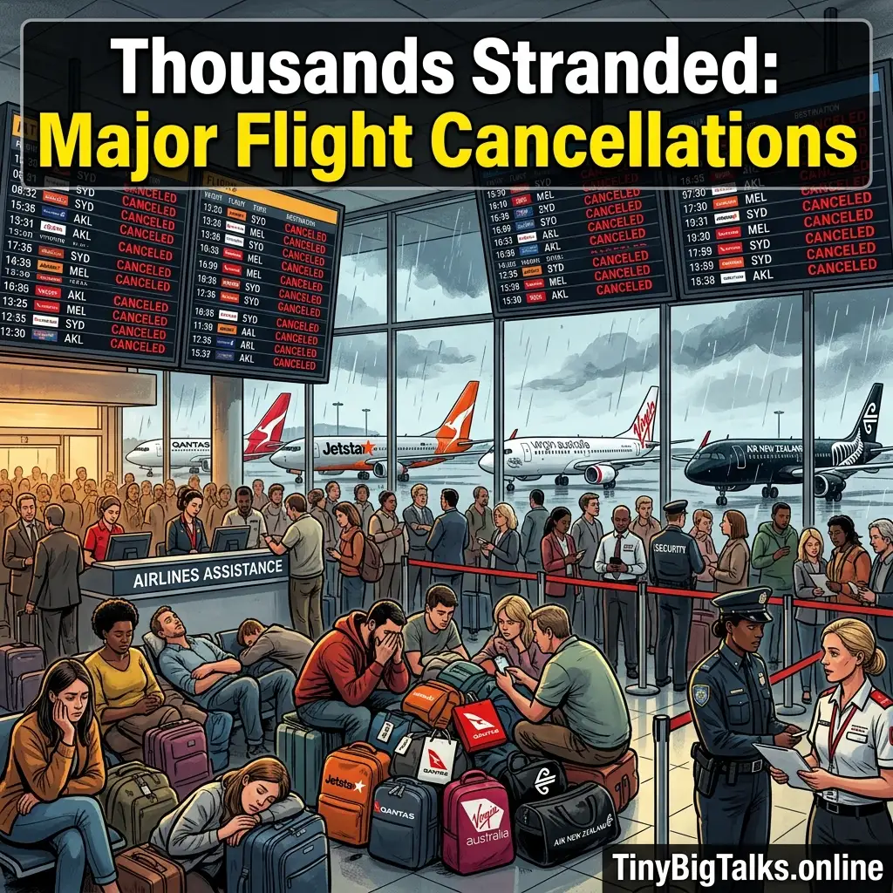

Euphoria Season 3 Premiere: Date & How to Watch
Get the 'Euphoria' Season 3 premiere details, release date, and full episode schedule. Learn how to watch Zendaya return to HBO Max in April 2026.
[Read more]
A staggering wave of logistical failures has swept through major airports across Oceania, leaving thousands of passengers abruptly abandoned in Australia and New Zealand as leading carriers buckle under massive operational strain. Authorities confirm that heavily relied-upon airlines including Jetstar, Qantas, Virgin Australia, and Air New Zealand are currently plunging into widespread chaos.
Current reports indicate an alarming gridlock facing transit hubs. Travelers are simultaneously experiencing 97 flight cancellations and over 1,127 delays spread heavily across dominant terminals in Melbourne, Sydney, and connected New Zealand routes. The sudden disruptions have dismantled weekend plans, imperative business trips, and international connections, leaving holidaymakers sleeping on concourse floors.
⭐🔥 Recommended: Gift link
A significant portion of the ongoing infrastructural anxiety originates directly from extreme Jetstar flight cancellations. Hundreds of furious passengers find themselves deeply affected as Jetstar abruptly grounds upwards of 15 standalone flights and pushes severe delays onto 105 more interconnected travel routes. Airline executives are scrambling, attributing the snowballing issues to a complex mixture of sudden engineering hurdles, compounding weather delays, and severe ongoing local air traffic control resource constraints.
However, the crisis extends far beyond one budget carrier. Flagship brands Qantas, Virgin Australia, and Air New Zealand are heavily entangled in the logistical nightmare, issuing sweeping alerts down their respective networks. Because airport ecosystem schedules run on intricately tight turnaround margins, a grounded flight in Sydney can drastically delay a cascading sequence of aircraft scheduled for Auckland or Melbourne the very same day.
If your itinerary involves trans-Tasman routes in the coming 72 hours, here is critical advice to navigate these major travel disruptions:
⭐🔥 Recommended: Gift link
With thousands fundamentally abandoned in the terminal chaos, Australia's and New Zealand's travel sector is pleading for extreme consumer patience as engineers and flight desks labor continuously to untangle the devastating 1,100+ delays holding the local grid hostage.
Check out this URL to watch multiple videos from various social media platforms in one place: Click here

Get the 'Euphoria' Season 3 premiere details, release date, and full episode schedule. Learn how to watch Zendaya return to HBO Max in April 2026.
[Read more]
A massive fire at the Viva Energy oil refinery in Geelong was extinguished after 12 hours. Discover the cause and the potential impact on Australian petrol prices amid a global fuel crunch.
[Read more]
Rory McIlroy captures his career Grand Slam winning the 2026 Masters. He beat Scheffler by one shot to claim the $4.5M prize at Augusta National.
[Read more]
In a historic shift, Peter Magyar's Tisza Party wins the 2026 Hungarian elections, ending Viktor Orbán's 16-year era.
[Read more]
Barcelona crash out of the UEFA Champions League 2026 quarter-finals as Atletico Madrid advance 3-2 on aggregate. Lamine Yamal and Ferran Torres shone but Eric Garcia's red card sealed Barca's fate.
[Read more]